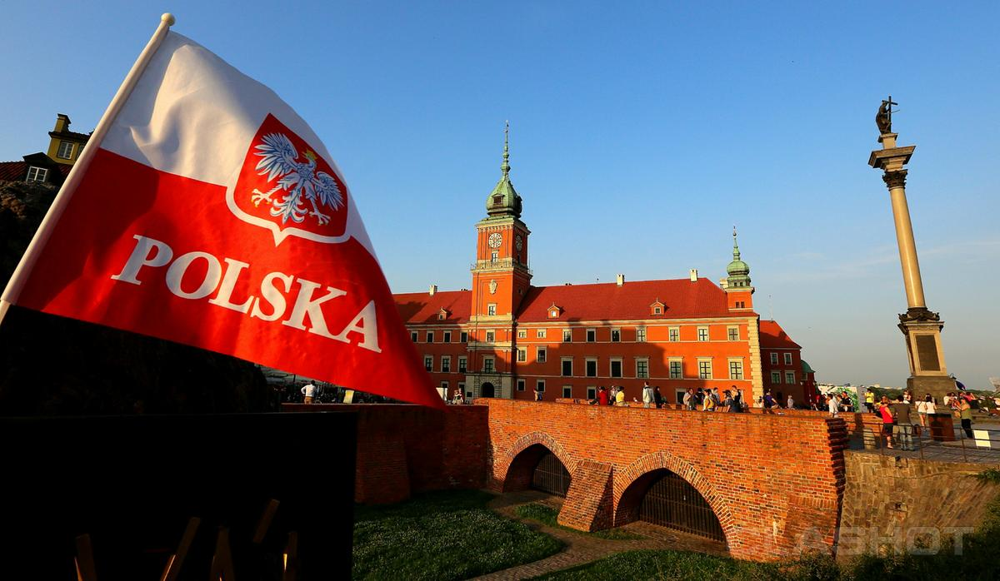
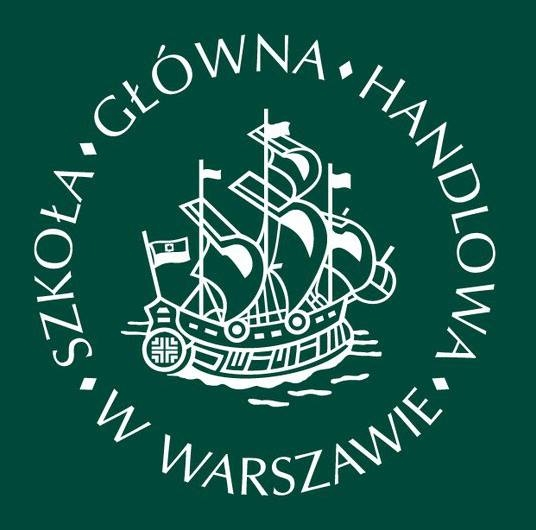
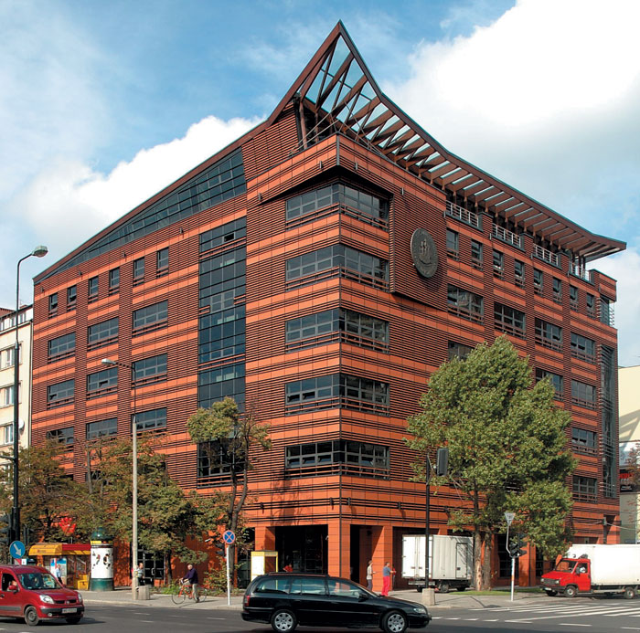

Образование в Польшу
Добро пожаловать в Польшу!
Польша - одна из ближайших соседок Украины. Поляки близки нам по духу, и понимаем мы друг друга без помощи переводчика. Несмотря на это, о преимуществах образования в Польше пока что немногие имеют представление. Польша является полноправным членом Европейского союза, благодаря этому, на территории государства действуют установленные правила и нормы, единые для всех европейских стран. Высшее образование в Польше соответствует всем заявленным стандартам европейского обучения, а польский диплом признан во всех странах мира. Обучение в Польше привлекательно во многих отношениях.В первую очередь из-за доступности образовательных программ в престижных учебных заведениях.
Выпускники получившие высшее образование в Польше, могут пользоваться в европейских странах теми же правами, что и все европейцы. Именно поэтому учеба и магистратура в Польше становятся все более популярными среди иностранных студентов.
Если сравнивать процесс поступления в этой стране с другими европейскими странами, то без преувеличения можно сказать, что польские вузы намного менее требовательны к нашим студентам, чем, к примеру, британские или германские. Например, пакет документов, который нужно подготовить для поступления, здесь намного меньше. В большинстве вузов поступающему нужно будет подать только заполненную онлайн-анкету (она висит на сайте выбранного вуза), оригинал аттестата с приложением (для будущих магистров — диплом бакалавра с приложением) и заверенный нотариально его перевод, медсправку, а также сертификат о знании польского языка (его требуют не всегда). Однако в этом деле есть свои нюансы, из-за которых подготовка необходимых бумаг может вылиться в копеечку. Например, на документах об образовании в обязательном порядке должен стоять апостиль (специальная печать) украинского Министерства образования и науки, молодежи и спорта, который подтверждает то, что они настоящие (стоимость около 300 грн за один документ). Также, к примеру, государственные вузы в Польше требуют, чтобы документы переводил только специальный присяжный переводчик, зарегистрированный в Национальном регистре присяжных переводчиков Министерства юстиции Польши (их перечень здесь — www.ms.gov.pl). Его услуги стоят 35 злотых (около 7,75 евро) за 1125 знаков. Если же перевод сделан в Украине, его нужно нотариально заверить в Консульстве Республики Польша. А это стоит недешево - 30 евро за страницу. И, наконец, рассмотрение документов от поступающего - платное. Так, если поступать в госвуз, придется заплатить 200 евро. А если же речь идет о частном вузе, то эта сумма может быть намного меньше — 70-400 злотых (15,5-89 евро).
Приемущества высшего образования в Польше:
Краткая информация
| Город | Варшава |
| Университет | Варшавская Школа Экономики (Warshaw School of Economics) |
| Описание университета | Варшавская Школа Экономики является самым первым экономическим университетом в Польше. Была открыта в 1906 году Августом Зелинским. Ректором университета является профессор Marek Rocki. Традиционно, Варшавская Школа Экономики является центром научных исследований в экономике и менеджменте, постоянно издает книги, статьи, новые публикации о проектах учебного заведения. |
| Специальность | Количественные методы в экономике и информационных системах |
| Сайт университете | Click |
| Язык | Английский |
| Режим обучения | Стационар |
| Описание курса | Первый цикл обучения по специальности "Количественные методы в экономике и информационных системах" в Варшавском университете экономики направлен на обеспечение базовых знаний в области экономики, менеджмента и финансов, а также знаний в области количественных методов в экономике и информационных систем. Данное направление подготовки включает в себя практические курсы в области статистического и эконометрического анализа, принятия решений, информационные технологии и демографии. В рамках данного направления, можно выбрать одну из двух образовательных профилей. В первом основное внимание уделяется количественным методам в экономике, а во втором - количественным методам в информационных технологиях. Развиваются компетенции, необходимые как для начала карьеры в бизнес-структурах и учреждениях, в которых необходимо использовать математические, статистические, эконометрические и его инструменты или делать бизнес. Так же они дают хорошую теоретическую и методологическую основу взять второй цикл обучения. |
| Стоимость обучения | Вступительный взнос в ВУЗ (оплата единоразово) - 200 евро + Бакалаврат - 3800 евро/магистратура - 3600 евро |
| Проживание | ВУЗ предлагает студентам свои общежития. |
Фотографии
|  |  |